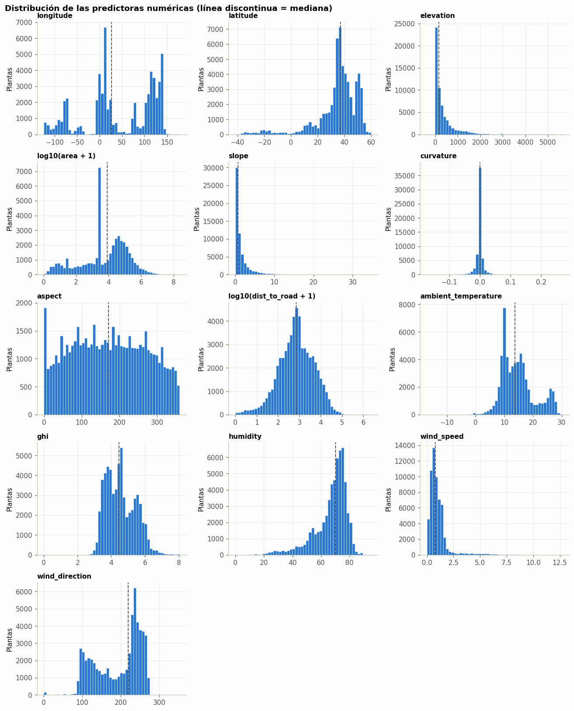
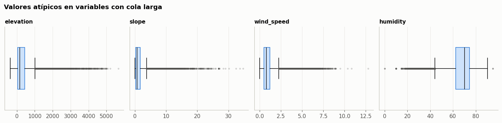
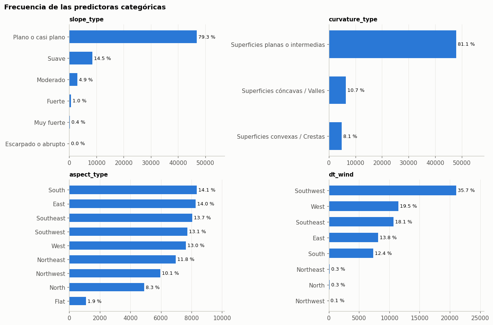

4. Análisis univariado#
Se describe cada una de las 17 predictoras por separado: su forma, su asimetría y sus valores atípicos.
4.1 Variables numéricas#
desc = df[NUMERIC].describe().T
desc["asimetria"] = df[NUMERIC].skew()
desc["% atipicos (IQR)"] = [iqr_outliers(df[c]) for c in NUMERIC]
desc.round(2)
| count | mean | std | min | 25% | 50% | 75% | max | asimetria | % atipicos (IQR) | |
|---|---|---|---|---|---|---|---|---|---|---|
| longitude | 58978.0 | 43.68 | 77.32 | -124.10 | -1.00 | 26.76 | 117.42 | 1.779800e+02 | -0.39 | 0.00 |
| latitude | 58978.0 | 34.86 | 16.01 | -41.61 | 31.66 | 37.01 | 44.29 | 5.994000e+01 | -1.96 | 7.85 |
| elevation | 58978.0 | 353.62 | 526.64 | -378.00 | 46.00 | 156.00 | 434.00 | 5.656000e+03 | 3.18 | 9.26 |
| area | 42649.0 | 180723.16 | 1999936.02 | 0.01 | 1160.47 | 8067.38 | 62083.87 | 2.347000e+08 | 72.62 | 13.53 |
| slope | 58978.0 | 1.45 | 2.26 | 0.00 | 0.24 | 0.67 | 1.66 | 3.468000e+01 | 3.98 | 9.55 |
| curvature | 58978.0 | -0.00 | 0.01 | -0.17 | -0.00 | 0.00 | 0.00 | 2.700000e-01 | 0.55 | 18.95 |
| aspect | 58978.0 | 171.59 | 98.54 | -1.00 | 90.00 | 170.67 | 253.40 | 3.596100e+02 | 0.04 | 0.00 |
| dist_to_road | 58978.0 | 3821.72 | 34190.88 | 0.00 | 214.14 | 724.38 | 2651.75 | 2.295655e+06 | 48.74 | 12.78 |
| ambient_temperature | 58978.0 | 14.59 | 5.77 | -17.06 | 10.18 | 13.74 | 17.28 | 3.034000e+01 | 0.65 | 1.09 |
| ghi | 58978.0 | 4.55 | 0.86 | 0.00 | 3.84 | 4.47 | 5.24 | 8.050000e+00 | 0.46 | 0.19 |
| humidity | 58978.0 | 66.90 | 11.64 | 0.00 | 62.44 | 70.25 | 74.62 | 9.500000e+01 | -1.49 | 5.70 |
| wind_speed | 58978.0 | 0.99 | 0.93 | 0.00 | 0.50 | 0.78 | 1.20 | 1.276000e+01 | 3.56 | 5.25 |
| wind_direction | 58978.0 | 192.97 | 59.19 | 0.00 | 134.32 | 218.60 | 241.82 | 3.525000e+02 | -0.51 | 0.00 |
fig, axes = plt.subplots(5, 3, figsize=(12, 15))
for ax, col in zip(axes.flat, NUMERIC):
data = df[col].dropna()
log = col in ("area", "dist_to_road")
if log:
data = np.log10(data + 1)
ax.hist(data, bins=50, color=CLASS_COLORS["Alta"], edgecolor=SURFACE, linewidth=0.4)
ax.set_title(f"log10({col} + 1)" if log else col, fontsize=10)
ax.set_ylabel("Plantas")
ax.axvline(data.median(), color=NEUTRAL, lw=1.2, ls="--")
for ax in axes.flat[len(NUMERIC):]:
ax.remove()
fig.suptitle("Distribución de las predictoras numéricas (línea discontinua = mediana)",
x=0.01, ha="left", fontweight="bold")
plt.tight_layout(); plt.show()

Lectura de las distribuciones
areaydist_to_roadson las variables más asimétricas (asimetría de 72.6 y 48.7). En escala original son ilegibles; en escala logarítmica muestran una forma aproximadamente unimodal. Esto justifica una transformaciónlog1pantes de escalar.longitudees multimodal, con picos en Norteamérica (−120° a −75°), Europa (0–30°) y Asia (75–145°). Refleja dónde se concentran las plantas, no una propiedad física (ver capítulo 5).latitudetiene asimetría negativa: solo el 4.6 % de las plantas está en el hemisferio sur.slope(asimetría 4.0) yelevation(3.2) se concentran cerca de cero, con colas largas: la mayoría de plantas está en terrenos bajos y planos.curvaturetiene el mayor porcentaje de atípicos por IQR (18.95 %), pero porque su rango intercuartílico es casi nulo, no por errores. Hay 10 232 valores exactamente iguales a 0.aspectywind_directionson variables circulares (0° = 360°). Usadas tal cual, un modelo considera que 359° y 1° están lejos. Se recomienda codificarlas como seno y coseno.ambient_temperature,ghiyhumidityson las más cercanas a una forma acampanada.
fig, axes = plt.subplots(1, 4, figsize=(13, 3.2))
for ax, col in zip(axes, ["elevation", "slope", "wind_speed", "humidity"]):
ax.boxplot(df[col].dropna(), vert=False, widths=0.5, patch_artist=True,
boxprops=dict(facecolor="#cde2fb", edgecolor=CLASS_COLORS["Alta"]),
medianprops=dict(color="#0b0b0b"),
flierprops=dict(marker="o", markersize=2, alpha=0.3,
markeredgecolor=NEUTRAL))
ax.set_title(col, fontsize=10); ax.set_yticks([])
fig.suptitle("Valores atípicos en variables con cola larga", x=0.01, ha="left", fontweight="bold")
plt.tight_layout(); plt.show()

4.2 Variables categóricas#
fig, axes = plt.subplots(2, 2, figsize=(12, 8))
for ax, col in zip(axes.flat, CATEGORICAL):
vc = df[col].value_counts().sort_values()
ax.barh(vc.index, vc.values, height=0.6, color=CLASS_COLORS["Alta"])
for y, v in enumerate(vc.values):
ax.text(v, y, f" {100 * v / len(df):.1f} %", va="center", fontsize=8.5)
ax.set_title(col, fontsize=10)
ax.set_xlim(0, vc.max() * 1.22)
ax.grid(axis="y", visible=False)
fig.suptitle("Frecuencia de las predictoras categóricas", x=0.01, ha="left", fontweight="bold")
plt.tight_layout(); plt.show()

slope_type: el 79.3 % de las plantas está en terreno plano o casi plano. La categoría Escarpado o abrupto tiene solo 4 casos; en el one-hot encoding produce una columna casi vacía y puede agruparse con Muy fuerte.curvature_type: el 81.1 % está en superficies planas o intermedias.aspect_type: es la más equilibrada, con las ocho orientaciones entre el 8 % y el 14 %. Flat (1.9 %) corresponde aaspect = −1.dt_wind: predominan los vientos del suroeste (35.7 %). Norte, noreste y noroeste suman menos del 1 %, otro caso de niveles raros.